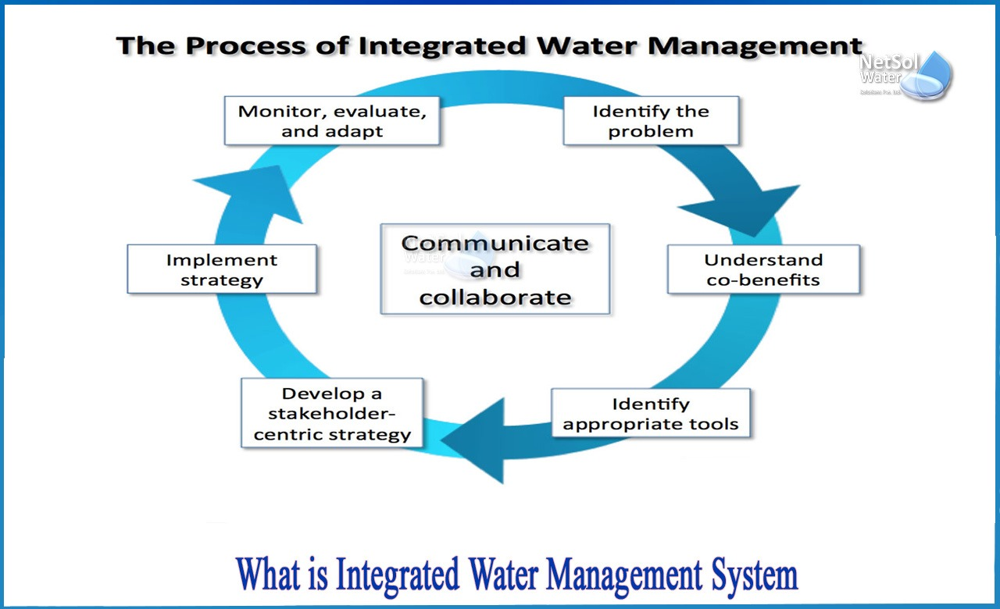

Sustainable Water Management for Water Scarcity
Key Concepts
Sustainable water management aims to ensure that water resources are used efficiently to meet current needs while safeguarding the ability of future generations to meet their own demands. The goal is to maintain the balance between water supply and demand while preserving water ecosystems. It incorporates strategies like water conservation, reuse, and the equitable distribution of water. Sustainable management considers both the quality and quantity of water resources. Effective water management involves collaboration among governments, industries, and communities.
Introduction

Water scarcity affects billions of people worldwide, and it is becoming more pronounced with the growth of urban populations and the impact of climate change. It is not just a matter of insufficient water supply, but also inefficient management and distribution. Many regions face challenges in accessing clean, safe drinking water, which leads to health risks, economic losses, and social inequality. Sustainable water management practices are critical to address this issue, helping to conserve available water and improve its accessibility. Through technology and policy interventions, it is possible to reduce the effects of water scarcity.
How it Works

Sustainable water management involves various strategies to balance water demand and availability. It works by improving efficiency, reducing wastage, and increasing the reuse of water. For example, rainwater harvesting and wastewater treatment are used to supplement natural water supplies. Technologies like desalination convert seawater into drinkable water, which is vital for regions with limited freshwater resources. The goal is not just to ensure an adequate supply of water, but also to maintain ecosystem health and resilience against climate change impacts.
Key Principles:
- Efficiency: Reducing waste and ensuring optimal use of water resources.
- Conservation: Preserving freshwater sources and ecosystems.
- Equity: Ensuring fair and inclusive access to water for all communities.
- Resilience: Building adaptive capacity to cope with climate variability and water stress.
Types of Sustainable Water Management
Sustainable water management includes various approaches tailored to local conditions. Some of the most common types include rainwater harvesting, wastewater recycling, integrated water resources management (IWRM), and desalination. Each of these methods has a specific role in alleviating water scarcity. For instance, rainwater harvesting can be particularly useful in regions with limited rainfall, while wastewater recycling helps reduce reliance on freshwater sources. IWRM ensures that water, land, and related resources are managed in a coordinated way to maximize the benefits to society and the environment.
1. Rainwater Harvesting
This practice involves collecting and storing rainwater for various uses, such as irrigation, drinking water, or industrial processes. It reduces dependency on groundwater and surface water sources, providing a sustainable alternative during dry spells. Rainwater harvesting systems can be easily implemented at the community or household level, making it a flexible and cost-effective solution in many regions.
2. Wastewater Treatment and Reuse
Recycling treated wastewater for non-potable uses like irrigation, landscaping, or industrial cooling significantly conserves freshwater. Advanced treatment technologies make wastewater safe for reuse, ensuring that it does not contribute to pollution. In areas where fresh water is scarce, this method helps meet the demand for water while reducing environmental impact.
3. Integrated Water Resources Management (IWRM)

IWRM is a comprehensive approach to managing water resources in a way that considers environmental, economic, and social factors. It involves planning, developing, and managing water in an integrated manner, ensuring equitable access, sustainable use, and environmental protection. This approach requires collaboration between various sectors and stakeholders to ensure water security.
4. Desalination
Desalination is the process of removing salt and other impurities from seawater to make it suitable for consumption and irrigation. This technology is especially vital in coastal regions with limited freshwater but abundant seawater resources. Though expensive and energy-intensive, desalination offers an important alternative source of fresh water in water-scarce regions.
Methods for Sustainable Water Management
Several methods can be employed to implement sustainable water management practices effectively. These include modern irrigation techniques, public awareness campaigns, water-saving technologies, and government regulations. Each method aims to reduce water consumption and improve the efficiency of water use. By combining these techniques, communities can mitigate the impacts of water scarcity while improving resilience against droughts and other climate-related challenges.
1. Efficient Irrigation Systems

Efficient irrigation systems, such as drip irrigation and smart sprinklers, allow farmers to minimize water use while maximizing crop yields. These technologies deliver water directly to plant roots, reducing evaporation and runoff. The adoption of such systems is critical for agriculture, which is one of the largest consumers of water worldwide.
2. Water Conservation Policies
Governments and industries can implement policies and regulations to reduce water consumption. These include promoting water-efficient appliances, creating incentives for water-saving technologies, and encouraging sustainable practices in agriculture and industry. Effective policy frameworks ensure that water is conserved at the national and local levels.
3. Public Awareness and Education
Public education campaigns play a vital role in changing behavior and encouraging responsible water use. By educating communities about the importance of water conservation and how they can reduce their water footprint, these programs help foster a culture of sustainability and make water conservation a community priority.
4. Water Recycling and Reuse Technologies
Water recycling technologies enable the reuse of water for non-potable purposes such as irrigation and industrial processes. By using advanced filtration and treatment systems, wastewater can be purified to meet safety standards for reuse, reducing the demand for freshwater. This technology plays a key role in urban water management strategies.
Success Stories
1. Singapore's NEWater
Singapore has developed a world-class water management strategy, using advanced technologies like NEWater. NEWater is produced by treating and purifying wastewater to create high-quality water, which is then used for industrial, commercial, and even potable purposes. This approach has significantly increased Singapore's water self-sufficiency and resilience to climate change.
2. Israel's Water Management Practices
Israel has become a leader in water management by implementing cutting-edge technologies like drip irrigation, desalination, and water recycling. These practices have allowed the country to overcome its water scarcity challenges, achieving nearly full water reuse in agriculture and municipal systems. Israel's innovative approaches provide a model for other countries facing water stress.
3. California's Water Conservation Programs
California has faced severe droughts, and its water conservation programs have become a key model for sustainable water use. Initiatives like drought-resistant crops, efficient irrigation, and public education campaigns have helped reduce water consumption in agriculture and households, leading to more sustainable water practices across the state.